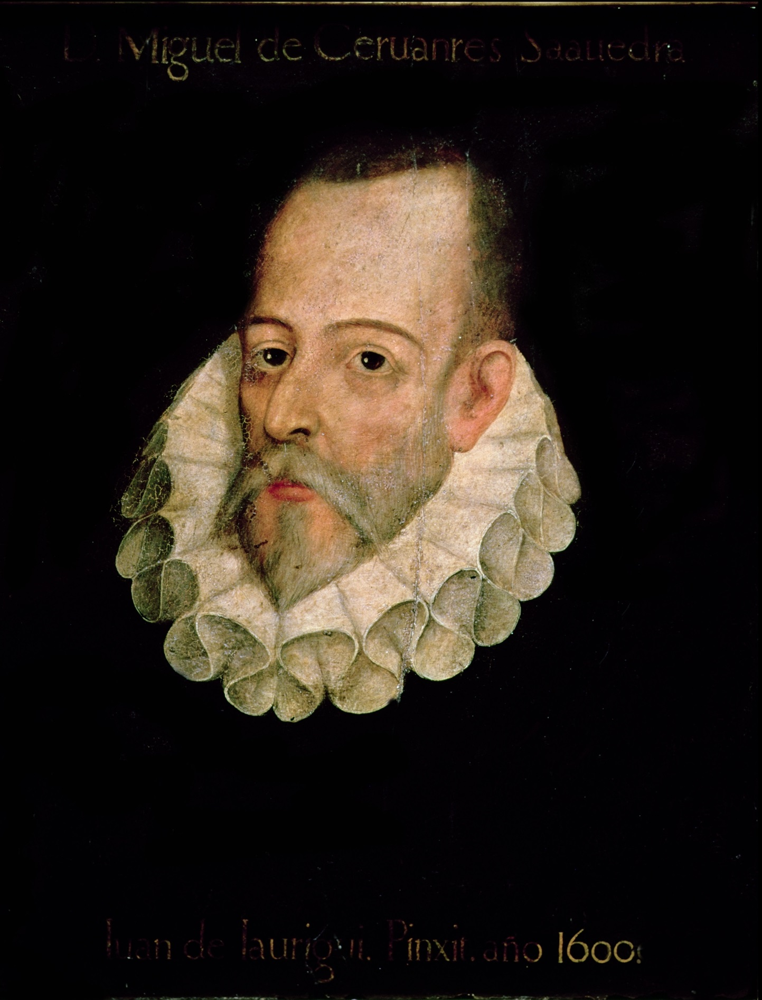
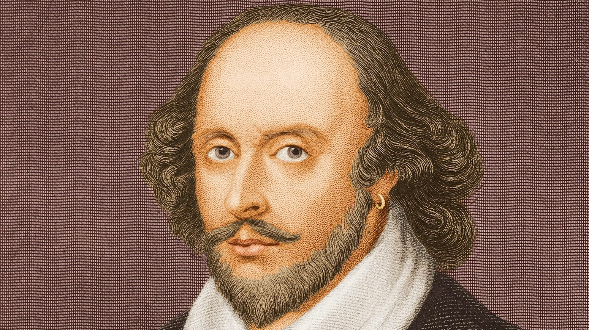

Renesance a humanismus
Informace
- přírodní a astronomické objevy
- objevení Ameriky (1492)
- rozvoj věd o člověku (anatomie, lékařství)
- důraz se přesouvá z posmrtného života na život pozemský
- vynález knihtisku - Johannes Gutenberg (1445)
- renesance - znovuzrození antického umění, umělecký směr, který vznikl v Itálii
- humanismus - důležitější je člověk než bůh
Italská renesance
Dante Alighieri (1265 - 1321)
- dílo - Božská komedie
- rozsáhlá epická báseň, má 3 části - "Peklo", "Očistec", "Ráj"
Francesco Petrarca (1304 - 1374)
- dílo - Sonety Lauře
- sbírka milostné poezie
Giovanni Boccaccio (1313 - 1375)
- dílo - Dekameron
- soubor sta novel
Španělská renesance a humanismus
- období "zlatého věku" španělského písemnictví (16. a 17. století)
- vrcholným představitelem je spisovatel, básník, dramatik a voják Miguel de Cervantes y Saavedra
Miguel de Cervantes y Saavedra

Portrét Miguela de Cesvantese y Saavedry
Autor: Připisováno Juan de Jáuregui – 1. Neznámý2. cervantesvirtual.com3. Bridgeman Art Library: Object 119216, Volné dílo, Odkaz
.+%3Cbr%3EAlonso+Zamora+Vicente%2C+%3Cem%3EHistoria){kind=link}
- pocházel z rodiny zchudlého šlechtice
- v mládí přišel o levou ruku v námořní bitvě u Lepanta (Řecko, součást Osmansko-habsburské války)
- pět let strávil v otroctví v Alžíru, kam ho odvedli turečtí piráti, roku 1580 byl z otroctví vykoupen
- po návratu domů vystřídal různá zaměstnání, žil v chudobě, pro dluhy a podezření z vraždy byl vězněn
- napsal Důmyslný rytíř Don Quijote de la Mancha
Důmyslný rytíř Don Quijote de la Mancha
[don kichote de la manča]
- rytířský román
- kritizuje společnost, snaží se o vytvoření spravedlivého světa
- hlavní hrdina - zchudlý šlechtic (snílek), který se vypraví do světa, aby obnovil slávu rytířů
- ve světě ho doprovází jeho sluha Sancho Panza (praktický venkovan)
- Don Quijote svého koně pojmenuje Rocinante
Anglická renesance
- největší postavou anglického dramatu byl William Shakespeare (1564 - 1616)
William Shakespeare

Portrét Williama Shakespeara
Zdroj: Poetry Foundation
- narozen ve Stratfordu
- nejprve působil v kočovné divadelní společnosti
- po 7 letech se dostal do Londýna, tam působil jako herec a dramatik
- stal se i spolumajitelem divadelní společnosti, která roku 1599 začala hrát v divadle Globe, když divadlo roku 1613 vyhořelo, vrátil se do svého rodiště
Díla
tragédie
- Romeo a Julie
- Hamlet
- Othello
komedie
- Mnoho povyku pro nic
- Zkrocení zlé ženy
historické hry
- Julius Caesar
- Jindřich IV.
- Jindřich V.
- Jindřich VI.
- Jindřich VIII.